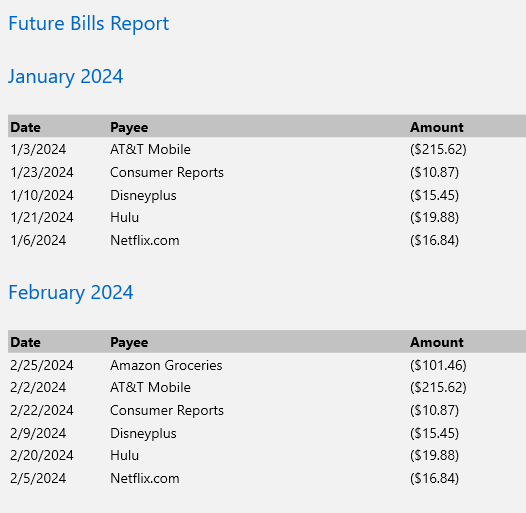

Future Bills Report#
This report tries to find recurring payments form transactions with a Category of type Expense or RecurringExpense so it can forecast
what your upcoming payments might be over the next 12 months.
You might see something like this:

It will repeat this out for 12 months and then show the total for the year.
You can force a category top show up in this report by changing
the type to RecurringExpense.